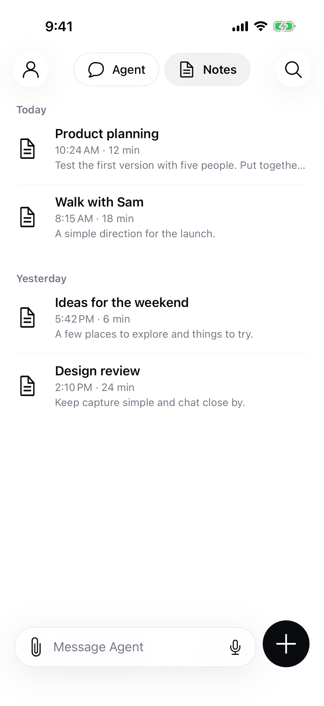
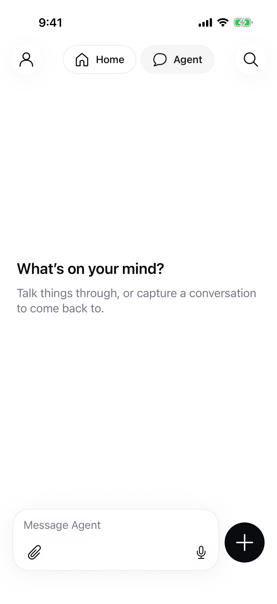
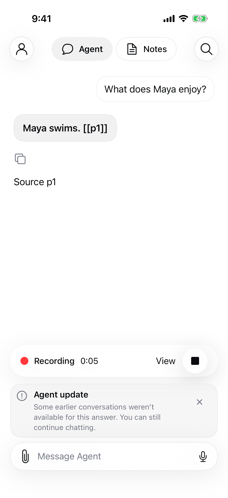
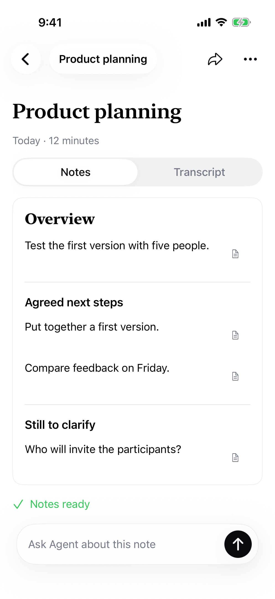
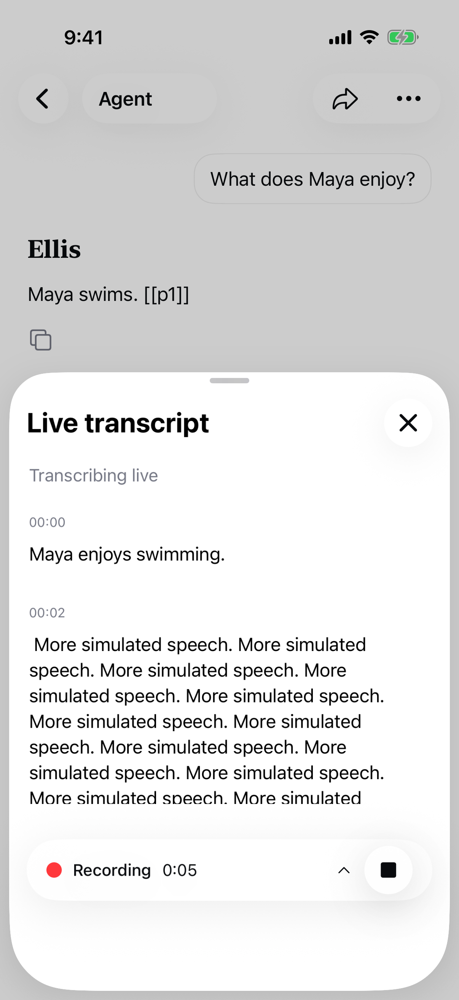
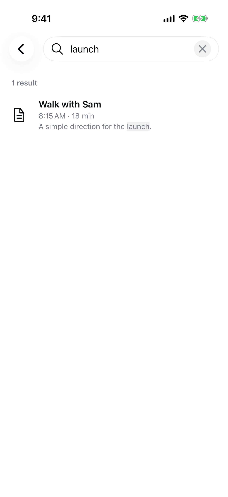
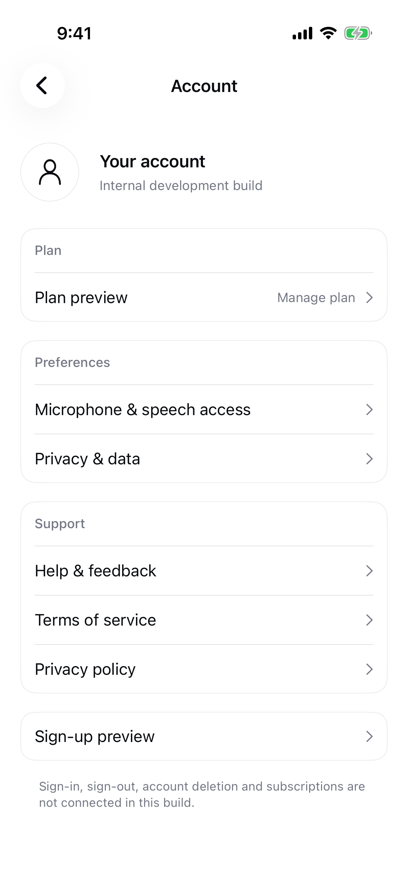
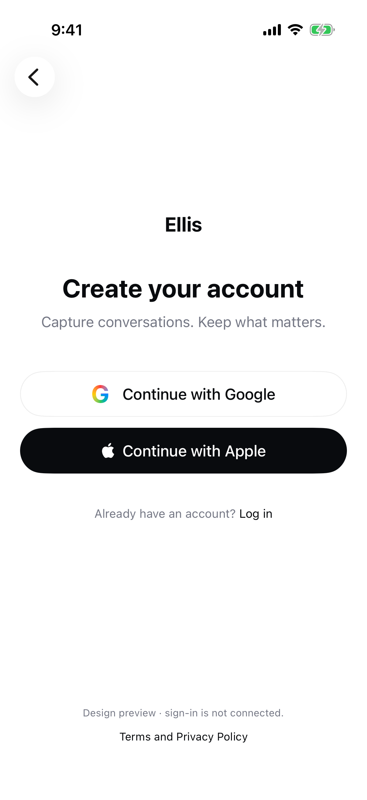
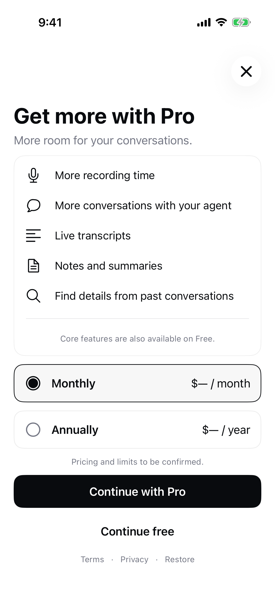
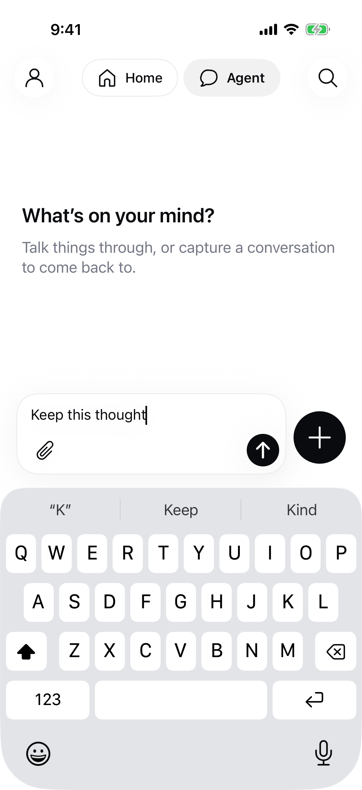
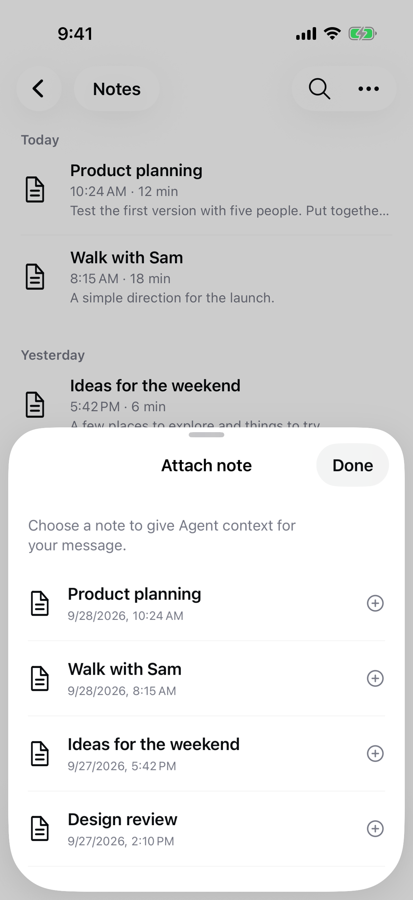
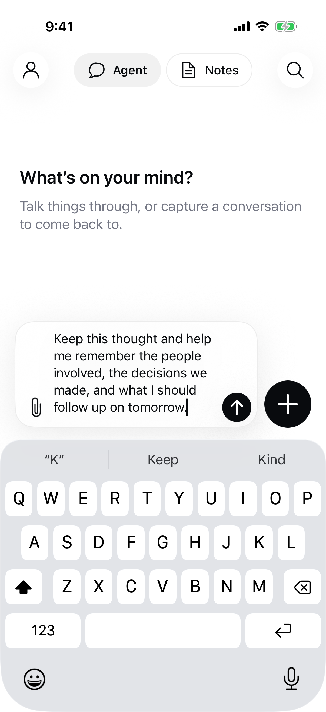
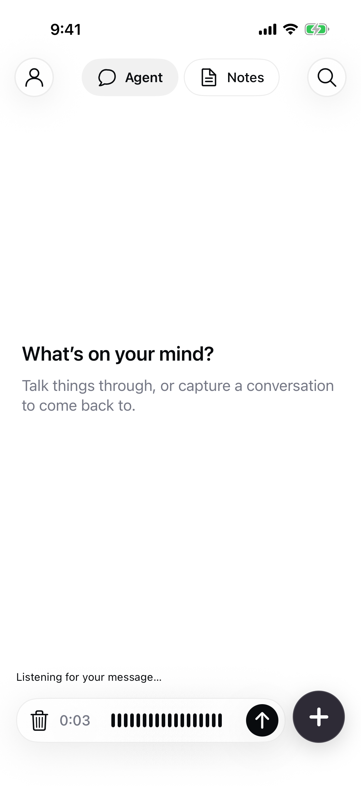
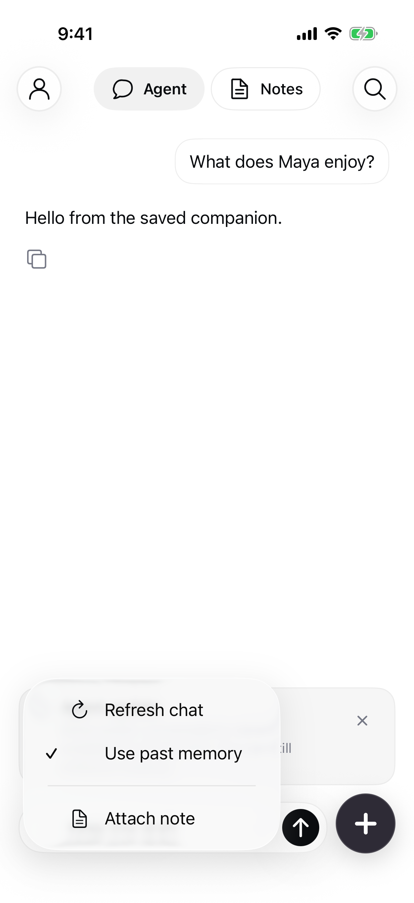
Actual iPhone 17 Pro simulator screenshots, September 28, 2026. Click any screen for its full-resolution image. Sign-up and billing are unconnected previews. Capture screens include synthetic QA content and source-debug output. Physical-device acceptance remains pending.













